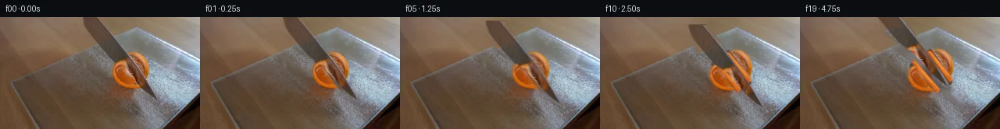

![首帧]()

Round 00
2026-11-04T22:06:31.878649+00:00像素候选变化代码 +225/−0inspection 更新
pixels 2a440f722e8d87a1 · code 9b81db09b11785c9
查看本轮 generate.py 真实 diff
--- previous/generate.py +++ current/generate.py @@ -0,0 +1,225 @@ +from pathlib import Path + +import cv2 +import numpy as np +from PIL import Image, ImageDraw + +from artifact_io import save + + +ROOT = Path(__file__).resolve().parent +W, H = 256, 144 + + +def soft_polygon(points, blur=0.7): + """Return a softly anti-aliased mask for a polygon in source coordinates.""" + scale = 4 + mask = np.zeros((H * scale, W * scale), np.uint8) + pts = np.rint(np.asarray(points, np.float32) * scale).astype(np.int32) + cv2.fillPoly(mask, [pts], 255, lineType=cv2.LINE_AA) + mask = cv2.resize(mask, (W, H), interpolation=cv2.INTER_AREA) + if blur: + mask = cv2.GaussianBlur(mask, (0, 0), blur) + return mask.astype(np.float32) / 255.0 + + +def ellipse_mask(center, axes, blur=0.6): + scale = 4 + mask = np.zeros((H * scale, W * scale), np.uint8) + cv2.ellipse( + mask, + tuple(int(v * scale) for v in center), + tuple(int(v * scale) for v in axes), + 0, + 0, + 360, + 255, + -1, + cv2.LINE_AA, + ) + mask = cv2.resize(mask, (W, H), interpolation=cv2.INTER_AREA) + if blur: + mask = cv2.GaussianBlur(mask, (0, 0), blur) + return mask.astype(np.float32) / 255.0 + + +def over(dst, src, alpha): + a = np.clip(alpha[..., None], 0.0, 1.0) + return np.clip(dst.astype(np.float32) * (1.0 - a) + src.astype(np.float32) * a, 0, 255).astype(np.uint8) + + +def affine_layer(layer, alpha, shift=(0.0, 0.0), angle=0.0, center=(168.0, 72.0)): + m = cv2.getRotationMatrix2D(center, angle, 1.0) + m[:, 2] += shift + warped = cv2.warpAffine(layer, m, (W, H), flags=cv2.INTER_LINEAR, borderMode=cv2.BORDER_CONSTANT) + warped_a = cv2.warpAffine(alpha, m, (W, H), flags=cv2.INTER_LINEAR, borderMode=cv2.BORDER_CONSTANT) + return warped, warped_a + + +def make_clean_plate(src, removal): + """Remove the starting objects while retaining the surrounding real texture.""" + binary = np.uint8(removal > 0.08) * 255 + binary = cv2.dilate(binary, np.ones((3, 3), np.uint8), iterations=1) + clean = cv2.inpaint(src, binary, 5, cv2.INPAINT_TELEA) + + # Reinstate the glass board's obscured upper-left bevel. The source portions + # outside the removal mask remain untouched; this only completes the gap. + edge = np.zeros((H, W), np.uint8) + cv2.line(edge, (15, 84), (176, 13), 210, 1, cv2.LINE_AA) + cv2.line(edge, (16, 86), (177, 15), 65, 1, cv2.LINE_AA) + edge = cv2.GaussianBlur(edge, (0, 0), 0.5).astype(np.float32) / 255.0 + light = np.full_like(clean, (177, 188, 185), dtype=np.uint8) + clean = over(clean, light, edge * 0.30) + return clean + + +def make_cut_face(side): + """Procedural moist citrus surface that becomes visible behind the blade.""" + rgba = np.zeros((H, W, 3), np.uint8) + if side == "left": + poly = [(149, 51), (154, 51), (184, 89), (180, 95), (173, 84), (158, 66)] + inner = [(152, 54), (155, 55), (181, 89), (179, 91), (170, 80), (159, 67)] + pith = [(151, 52), (154, 53), (183, 90), (180, 93)] + glint = [(158, 61), (161, 65), (174, 80)] + else: + poly = [(155, 48), (161, 47), (190, 82), (187, 88), (177, 76), (164, 59)] + inner = [(158, 50), (161, 50), (187, 82), (186, 85), (176, 74), (165, 60)] + pith = [(157, 49), (160, 49), (189, 82), (187, 85)] … diff truncated; 138 more lines …